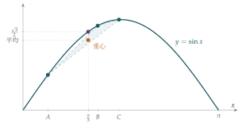

STEP II 2007、第7問
先に進む前に問題を読んでおこう。問題は STEP Support Programme の問題データベースにある： step.maths.org/questions/07-s2-q7
導入
第 3.2 節 では、巧妙な帰納法（induction）を用いて AM–GM（相加・相乗平均の不等式）を証明した。ここでは、それがはるかに大きな事実の特別な場合として、わずか一行で導かれる。その大きな事実とは凹性（concavity）である。凹性とは、丘の頂上のように下向きに曲がった曲線の形のことである。このような曲線についてのただ一つの幾何学的事実、すなわち曲線がその弦（chord）より上にあるという事実が、三角形に関する事実から AM–GM、さらには確率論、情報理論、経済学における不等式に至るまで、驚くほど多様な不等式を証明することがわかる。
大学では、この考え方は凸性（convexity）となり、現代数学を貫く大きな統一的テーマの一つとなる。凸最適化（convex optimisation）のように、凸性の上に丸ごと築かれた分野もある。
取りかかる前に
\((0, \pi)\) 上の \(y = \sin x\) のように、下向きに曲がった曲線を描いてみよ。その上に2点をとり、直線で結ぶ。弦は曲線の上にあるか、下にあるか。
下である。凹（concave）な曲線では、どの弦も両端点の間で曲線の下にある。二つの関数値の平均は弦の中点の高さであり、平均における関数値はその中点の真上にある曲線の高さである。したがって「弦は曲線の下にある」ということは、まさに \(n = 2\) の場合のイェンセン（Jensen）の不等式である： \[\frac{\mathrm{f}(x_1) + \mathrm{f}(x_2)}{2} \leq \mathrm{f}\left( \frac{x_1 + x_2}{2} \right).\] \(n\) 個の点の場合、点 \((x_k, \mathrm{f}(x_k))\) の平均はそれらの重心（centre of mass）であり、これは曲線の下側の領域の内部にあるので、やはり曲線の下にある（図 3.3.1）。
順を追って解く
段階 1 凹性の確認
\(0 < x < \pi\) において \(\frac{\mathrm{d}^2}{\mathrm{d}x^2}\sin x = -\sin x < 0\) であり、\(x > 0\) において \(\frac{\mathrm{d}^2}{\mathrm{d}x^2}\ln x = -\frac{1}{x^2} < 0\) である。■
段階 2 三角形
どの関数を、どの点に用いるか。またそれらの平均は何か。三角形の角は、その関数が凹である区間に入っているか。
\(\mathrm{f}(x) = \sin x\) とし、3点 \(A, B, C\) をとる。いずれも \(0\) と \(\pi\) の間に厳密に含まれ、そこで \(\sin\) は凹である。また、それらの平均は \(\frac{A + B + C}{3} = \frac{\pi}{3}\) である。イェンセンの不等式より \[\frac{\sin A + \sin B + \sin C}{3} \leq \sin\frac{\pi}{3} = \frac{\sqrt3}{2},\] よって \(\sin A + \sin B + \sin C \leq \frac{3\sqrt3}{2}\) であり、等号が成り立つのはちょうど正三角形（equilateral triangle）のときである。■

段階 3 一行で示す AM–GM
AM–GM は積と和を比較するものである。積を和に変える凹関数はどれか。
対数である。\(\mathrm{f} = \ln\) と正の数 \(t_1, \ldots, t_n\) にイェンセンの不等式を適用すると \[\frac{\ln t_1 + \cdots + \ln t_n}{n} \leq \ln\left( \frac{t_1 + \cdots + t_n}{n} \right).\] 左辺は \(\ln\bigl(\sqrt[n]{t_1 \cdots t_n}\bigr)\) である。\(\ln\) は増加関数なので両辺から取り除くことができ、これがまさに AM–GM である。等号が成り立つのは、すべての \(t_k\) が等しいときに限る。■
段階 4 AM–GM を使う
(a) では、左辺は4項の和であり、右辺には3変数の積が含まれる。いくつの項に AM–GM を適用すべきか。また、\(16\) はなぜ役に立つのか。
4つの正の数 \(x^4\)、\(y^4\)、\(z^4\)、\(16\) に AM–GM を適用すると \[\frac{x^4 + y^4 + z^4 + 16}{4} \geq \sqrt[4]{16\,x^4 y^4 z^4} = 2xyz.\] 両辺に \(4\) を掛けて \(x^4 + y^4 + z^4 + 16 \geq 8xyz\) を得る。■
次に、\(x^5 + y^5 + z^5 - 5xyz\) の最小値を求めよ。（ヒント：\(x^5y^5z^5\) の5乗根が欲しいので、5つの数が必要である。残りの二つは何にすべきか。）
\(x^5, y^5, z^5, 1, 1\) に AM–GM を適用すると \[\frac{x^5 + y^5 + z^5 + 1 + 1}{5} \geq \sqrt[5]{x^5y^5z^5} = xyz,\] よって \(x^5 + y^5 + z^5 - 5xyz \geq -2\) である。等号は \(x^5 = y^5 = z^5 = 1\)、すなわち \(x = y = z = 1\) のときに成り立ち、このとき式の値は \(3 - 5 = -2\) である。したがって最小値は \(-2\) である。■
等号条件が二重の役割を果たしていることに注意せよ。等号条件によって、この下界が実際に達成されることがわかり、\(-2\) が単なる下界ではなく最小値であることが示されるのである。
振り返り
一つの考え方、多くの不等式。凹な曲線についての一つの幾何学的事実から、三角形に関する結果と AM–GM が得られた。必要な計算は二階導関数（second derivative）の確認だけであった。
関数と点を選ぶ。イェンセンの不等式を使うとは、どの関数に、どの点で適用するかを決めることである。積を和に変える対数は、特によく使われる。
項を補って合わせる。(b) では、\(1\) を二つ加えることで AM–GM が問題にうまく合った。これは 第 3.2 節 で平均を補ったのと同じである。
背後にある数学
大学では、凸（convex）関数（凹を上下逆にしたもの）の標準的な定義は導関数にまったく触れない。\(\mathrm{f}\) が凸であるとは \[\mathrm{f}\bigl(t x_1 + (1-t)x_2\bigr) \leq t\,\mathrm{f}(x_1) + (1-t)\,\mathrm{f}(x_2) \qquad\text{任意の } x_1, x_2 \text{ と } 0 \leq t \leq 1,\] が成り立つことであり、これはまさに弦が曲線より上にあることを述べている。この定義は、\(|x|\) のような微分可能（differentiable）でない関数や多変数関数に対しても意味をもつ。デンマークの技術者であり数学者であったヨハン・イェンセン（Johan Jensen）は、1906年、自らの名を冠する不等式とともに、凸関数をそれ自体一つの研究対象として確立した。
いたるところに現れる凸性
凸性は、数学とその応用のいたるところに現れる。
確率論。イェンセンの不等式によれば、凹関数 \(\mathrm{f}\) と任意の確率変数（random variable）\(X\) に対して \(\mathrm{E}[\mathrm{f}(X)] \leq \mathrm{f}(\mathrm{E}[X])\) が成り立つ。経済学では、\(\mathrm{f}\) を凹な「効用（utility）」関数とすると、これによって、人々が £0 か £200 かが五分五分の賭けよりも確実な £100 を好む理由、そして保険が存在する理由が説明される。
情報理論。データ圧縮の基礎にある、エントロピー（entropy）が一様分布（uniform distribution）で最大になるという事実の証明は、\(\ln\) に対するイェンセンの不等式である。
最適化。凸関数には大域的最小値（global minimum）以外に局所最小値（local minima）がないので、「坂を下る」ことで必ず最良の答えが見つかる。凸最適化問題が効率よく解けるのはこのためであり、問題を凸な形に書き直すことに多大な努力が注がれるのもこのためである。
第 3.4 節 では、凸性の別の側面、すなわち関数とその逆関数の間の幾何学的な双対性（duality）を見ることになる。
思考のスキル
いくつかの結果が似た証明をもつときは、その背後にある一つの原理を探せ。そして、その原理を一度だけ証明し、何度も適用せよ。
AM–GM も、正弦についての三角形の不等式も、ほかの多くの不等式も、すべて「凹な曲線はその弦より上にある」の具体例である。原理を見抜くことで、寄せ集めの技巧が一つの方法へと変わる。
次の一歩
定義。STEP II 2018、第2問 の小問 (i) と (ii) は、上の囲みにある弦による凹性の定義から出発し、3点に対するイェンセンの不等式を導くものである。
正弦の積。STEP II 2018、第2問 の小問 (iii) に取り組んでみよ。
鋭角三角形。\(\tan x\) が \((0, \frac\pi2)\) 上で凸であることを示し、鋭角三角形（acute-angled triangle）において \(\tan A + \tan B + \tan C \geq 3\sqrt3\) が成り立つことを導け。
冪平均（power means）。\(x^2\) が凸であることを示し、\(\left(\frac{a_1 + \cdots + a_n}{n}\right)^2 \leq \frac{a_1^2 + \cdots + a_n^2}{n}\) を導け。これを、数の集まりの分散（variance）についての主張として解釈せよ。
さらに学ぶために
J. Michael Steele, The Cauchy–Schwarz Master Class（Cambridge University Press）。第 6 章は凸性とイェンセンの不等式を扱っている。
Claudi Alsina & Roger Nelsen, When Less Is More: Visualizing Basic Inequalities（Mathematical Association of America）。図によって証明される不等式を集めたもので、その多くが凸性を用いている。
Stephen Boyd & Lieven Vandenberghe, Convex Optimization（Cambridge University Press）。現代の古典で、オンラインで無料で読める。最初の数章では、凸性が実践においてなぜ重要なのかが示されている。